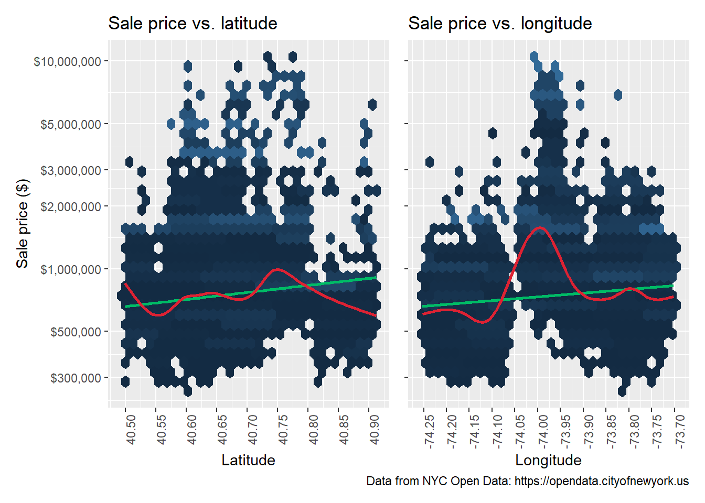

read_sales_data <- function(path) {
readxl::read_xlsx(
# Specify path
path = path,
# Specify tidy column names
col_names = c(
"borough_num",
"neighborhood",
"bldg_class_cat",
"tax_class_now",
"block",
"lot",
"easement",
"bldg_class_now",
"address",
"apt",
"zip",
"res_unit_sale",
"comm_unit_sale",
"total_unit_sale",
"land_sq_ft",
"gross_sq_ft",
"year_built_sale",
"tax_class_sale",
"bldg_class_sale",
"sale_price",
"sale_date"
),
# Skip header
skip = 8
) |>
dplyr::filter(
# Filter for single-family home sales...
bldg_class_cat == "01 ONE FAMILY DWELLINGS" &
# ...with a single unit sold...
total_unit_sale == 1
)
}Predicting New York City Home Prices
Introduction
Background
New York City has an unusual housing market compared to most American cities. First, only about one-third of households own their homes1. Second, single-family homes are relatively rare in New York City – only one in eight housing units sold in 2021 were in this category.
In the most desirable neighborhoods in Manhattan and Brooklyn, single-family homes are mostly rowhomes, like the classic brownstone. In other parts of the city, homes in this category range from beachfront cottages to sprawling mansions. The rarity and diversity of single-family homes makes predicting their prices a challenging task. For companies in the real estate industry, a model that predicts prices accurately can be the difference between profit and going out of business.
The dataset compiled here incorporates information about each property, its location, and nearby services and amenities. In contrast, the Ames Iowa Housing dataset encountered in educational contexts consists mostly of the details of the home – number of bedrooms and bathrooms, features like basements and driveways, building materials etc.2 The location and amenities approach may be more useful in a city as large and geographically diverse as New York City.
Statement of problem
The goal of the project is to build a model to predict sale prices of single-family homes in New York City using a combination of location features, areal features, and features of the property. The homes included in the training dataset should be move-in ready and sold on the open market, as those are the kinds of homes for which accurate pricing has the largest potential return for businesses.
Summary of data
All data are publicly available from https://opendata.cityofnewyork.us. The data has been sourced and compiled by the author.
A few important considerations before getting into the data:
All the data used in this project are open data from city agencies, which may be less complete than commercial datasets.
A large number of variables were explored for inclusion in the final set, but ultimately rejected. Some variables were relevant to only a small proportion of lots, while others had poor coverage or excessive missing values. Certain variables were highly correlated with the outcome, notably tax assessment data.
Screening the homes in the dataset was an important task for this project, and could not be done automatically in R. The screening process is briefly described below.
Variables
Outcome: Sale price
Predictors:
Location:
Borough
Latitude and longitude
Distance to city hall (used as measure of centrality)
Property attributes:
Lot area in square feet
Residential area in square feet
Ratio of lot area to residential area
Number of floors
Year built
Year of last major alteration
Property landmarked or in historic district
Nearby amenities
Distance to nearest…
subway station
bike route
park
Open Street
Number of each of the above within walking distance
Number of new housing units built nearby since 2010
School quality ratings for zoned elementary and middle schools
Wrangling the data
The first major data component is the NYC Department of Finance data on all property sales for 2021. This data is composed of five Excel spreadsheets, one for each borough.3 The spreadsheets have a common structure, so writing a function to import and select columns from them cuts down on redundant code.
Sales data
After importing all five spreadsheets, we compile the data from all five boroughs into a single table.
An important next step is to create a Borough-Block-Lot (BBL) identifier for each row by combining the separate elements in the sales data. The BBL system is the city government’s method of uniquely identifying each lot in the entire city. We will use the BBL IDs to compile the data from the various sources that are available.
Each unique sale is identified with a new column consisting of BBL plus date.
Errors in the data
The sales data has several problems. First, there are several types of errors that must be screened for:
- Misclassified lots (condos in multi-unit buildings marked as single-family homes, empty lots classified as homes etc.)
- Missing information
- Inaccurate information
Sales with these types of errors are excluded.
Second, there are a small number of houses that do not appear to be in habitable condition, and are sold for far less than market price. These houses were all discovered during the screening process described below, and are also excluded.
Sweetheart deals and transfers
The third type of problem with the data, and by far the largest, is that there are a large number of sales that are clearly not sold in arms-length sales on the open market. Including these sales in the dataset degrades the predictive power of any model attempting to predict market prices, so they should be excluded.
Note the huge number of 0-dollar sales on a histogram of all single-family home prices (below).
The data clearly contains no-cost transfers and sweetheart deals (homes sold for $5000 or even $10) between family, friends, business entities, and so on.
Filtering out non-arms-length sales
The market-rate prices we are predicting more specifically described as arm’s-length sales – sales where both parties are trying to maximize their advantage in the sale. In real estate, there are a number of different kinds of non-arms-length sales:
Auctions
Bank-owned properties
Short sales
Cash-for-homes services
These sales and others should be excluded from the dataset.
While it is impossible to positively identify every sale in this category, we can create a filter to identify candidates. To do this, we use data scraped from live listings on Zillow4 to develop an understanding of what actual market sales look like.
The distribution of single-family homes listed for sale on Zillow looks similar to that of our sales data, though with a “thicker” upper tail.
The Zillow data allows us to answer two important questions:
What is the minimum one can expect to pay for a house anywhere in the city? The sales for $5000 are obviously deals of some kind, but what about $100k sales? Based on the Zillow data, any house sold for under $250,000 is almost certainly not an arm’s-length sale and should be excluded.
What is the range of prices one can expect to pay for a house in a given neighborhood? Prices are not uniform across the city, so the filter should be responsive to local sub-markets. Based on the Zillow data, for any given neighborhood, houses that are sold for less than 45% of the neighborhood median sale price are likely sales that should be excluded.
We build a filter that catches all homes under $250k and all homes that were sold for less than 45% of the median price in the local area. Two measures of “local area” are used – ZIP code and neighborhood – and produce somewhat different, yet overlapping, sets of results.
Screening the filter results reveals that a small number of sales that appear to be on-market have been picked up by the filter, but overall the filter is reasonably effective.
Screening sales manually
It is reasonable to assume that the filter did not catch all homes sold off-market. The next task is to manually screen a portion of the remaining sales by searching for the address on Zillow and other websites. Over time, an intuition of what counts as a non-arms-length sale can be developed. Broadly speaking, homes that have one or more of the following attributes are excluded:
- Listed as an auction, short sale, bank-owned or real-estate-owned property, in foreclosure etc.
- Listed with language indicating a fixer-upper or other problems
- Showing visible signs of deterioration or abandonment
- Sold for substantially under for-sale or recently-sold homes in the area
- Sold for less than a previously-recorded sale
The screening process is time-intensive, so not every home can be screened. The focus was put on homes under $500k, homes that stood out in some way during data exploration, and homes that were identified as over- or under-predictions at some point during the model building process. Some random screening of homes was done to counter some of the biases inherent in this method of screening. About 1000 sales were screened in this manner, and 450 sales were excluded based on the results.
Capping the distribution
Another important filter for the data involves excluding homes over a certain price. The statistical reason for doing this is so that ultra-high-end outliers do not exert undue leverage during the modeling process. More conceptually, at some point in the price distribution, homes become out of reach of everyone except the ultra-wealthy, and thus the “market” for these homes is conceptually distinct from the market for homes sold for $500,000 to $1,000,000.
For this project, the prices will be capped at $10 million, a 40x multiple of the minimum price included. The decision to cap the prices here is ultimately arbitrary and may be higher than is truly useful – the principle of not discarding potentially useful data was important to the choice of where to cap.

The distribution of the screened and filtered sale price variable is similar in shape to both the original data and the Zillow data, meaning no extreme distortions were introduced during the process. An artifact visible in this graph that we can call the “million-dollar shelf” will show up more clearly in later graphs.
PLUTO data
The next step is to import data from PLUTO files. “Primary Land Use Tax Lot Output”5 is the name for publicly available data for each tax lot (identified by a BBL ID) in the city. It contains location data, district data, and features of the buildings on the tax lot, like floor area and the year it was built. All of the features of the properties that were not found in the sales data are found here.
pluto_data <-
read_csv(
file = "../data/pluto/Primary_Land_Use_Tax_Lot_Output__PLUTO_.csv",
# Guess column type based on more rows than default
guess_max = 120000
) |>
filter(bbl %in% sales_all_boroughs_filter_cap$bbl) |>
# Select columns and create tidy column names
select(
borough,
bbl,
address_pluto = address,
ct2010 = `census tract 2010`,
cb2010,
community_dist = `community board`,
council_dist = `council district`,
res_area = resarea,
num_floors = numfloors,
year_built_pluto = yearbuilt,
year_altered_1 = yearalter1,
year_altered_2 = yearalter2,
historic_dist = histdist,
landmark,
latitude,
longitude
)In addition to variables directly from the data, three more variables are created here:
- Flag for historic properties: the property is a designated landmark or is part of a historic district
- The ratio of lot size to residential area
- Year last altered: the year when the property last had major alterations that change its assessed tax value. If no alterations are recorded, the year built is used instead.
Neighborhood Tabulation Areas
Neighborhood Tabulation Areas6 are defined by the Department of Planning and are roughly equivalent to neighborhoods as commonly understood by city residents and those in the real estate industry. The NTA codes will be used as a short, convenient neighborhood identifier.
Distance-and-count for nearby amenities
Two important aspects of nearby amenities are incorporated in this project: the distance to the nearest of the type, and the count of that type of amenity within walking distance. “Walking distance” is variously defined as 400m (1/4 mile) and 800m (1/2 mile), but for this project, we’ll split the difference and define it as 600m.
To quickly calculate distance-to-nearest and count-in-radius, this function will used.
dist_and_count <- function(to_location, count_within_dist_m) {
# Returns row number of nearest feature to each BBL from nearest_to table
nearest_feature =
# Use bbl_sf every time
bbl_sf |>
st_nearest_feature(
y = to_location
)
dist_to_loc_tbl =
# Use bbl_sf every time
bbl_sf |>
# Find distance to location and round
mutate(
dist_to_loc =
st_distance(
x = bbl_sf,
y = to_location[nearest_feature, ],
by_element = TRUE
) |>
as.numeric() |>
round()
) |>
# Create a tibble with BBL and corresponding distance
as_tibble() |>
select(
bbl,
dist_to_loc
)
count_within_dist <-
# Use bbl_sf
bbl_sf |>
# Find whether each BBL is within dist_m meters of each object
st_is_within_distance(
y = to_location,
dist = count_within_dist_m,
sparse = FALSE
) |>
# Sum across each row to find number TRUE for each BBL
rowSums() |>
# Convert to tibble
as_tibble_col(column_name = "num_within_dist")
dist_and_count <-
count_within_dist |>
mutate(
# Add BBL IDs
bbl = dist_to_loc_tbl$bbl,
# Add distance to nearest
dist_to_nearest = dist_to_loc_tbl$dist_to_loc,
.before = num_within_dist
)
return(
dist_and_count |>
distinct()
)
}Here are the amenities used in this project.
Subway stations7
The subway is vitally important for connecting far-flung neighborhoods to the central areas of the city (and to each other). But large parts of the city have no subway connections, which may lead to lower desirability and thus lower prices. A “subway station” here is defined as a series of parallel platforms that one or more subway services may use. For example, Union Square in Manhattan counts as three stations (4-5-6, L, N-Q-R-W).
Bike routes8
Bike routes are increasingly important to getting around New York City, with a “bike boom” occurring in 2020. They are attractive amenities, much like the subway. We can expect housing prices near bike routes to be higher on average, increasing with bike route density.
Bike routes are represented as a series of segments, with roughly one block per segment. The number-within-walking distance represents bike route density, all segments of all routes within 600 meters.
Parks9
Parks are synonymous with city living, offering public green space for all residents. Good nearby parks may be associated with higher home prices. Park types included here are neighborhood parks, playgrounds, and major parks. Greenstreets features, neighborhood gardens, beaches, and other kinds of minor parks are not included.
Open Streets10
Open Streets11 are a recent innovation in New York City: public streets that have been closed to motor vehicles as a way to increase the public space available to neighborhood residents. Much like parks, nearby Open Streets may be associated with higher home prices. Open Streets include any area designated an open street at any point in 2021.
Distance to City Hall
City Hall is a good proxy for the center of the city, even though it is not geographically the center point. It is adjacent to the very wealthy areas of FiDi and Lower Manhattan, and the area has been a center of civic and commercial life for centuries.
Local housing construction
Department of Buildings data for completed jobs since 2010.12 Completed housing jobs are included since there are two competing popular intuitions: housing construction either drives prices up through gentrification, or drives prices down by increasing the housing supply.
“Housing jobs” can be new construction and alteration (adding units) and demolition (removing units). The net impact of these jobs is summed for each census tract, a small area that is a collection of adjacent blocks.
School quality
School quality is often seen as exerting a strong influence on housing prices, with the intuition being that higher prices are associated with better schools. In NYC, elementary and middle schools each have their own zone systems, while high schools operate on a competitive admissions system similar to colleges. Because high schoolers will only sometimes attend schools near their place of residence, only elementary and middle schools are included in the data.
The School Quality Guide13 data is used, specifically the Parental Quality survey data. The survey consists of 6 quality metrics that are averaged to obtain an overall quality score for each school. Then all schools serving a zone have that score averaged. Finally, the zone for each lot is found and the score from that zone assigned to the lot.
Final dataset
After compiling all the above sources, we have the final dataset.
sfh_prices <-
all_data |>
select(
# Identifiers
sale_id,
address,
bbl,
borough,
neighborhood,
nta_code,
# Outcome variable
sale_price,
# Predictor variables
sale_date,
land_sq_ft,
gross_sq_ft,
lot_to_res_ratio,
num_floors,
year_built = year_built_sale,
year_last_altered,
historic,
latitude,
longitude,
dist_to_city_hall,
dist_to_subway,
num_subway_600m,
dist_to_bike_route,
num_bike_route_600m,
dist_to_park,
num_parks_600m,
dist_to_open_street,
num_open_streets_600m,
net_units_tract,
schools_quality_elem,
schools_quality_middle
)Exploratory data analysis
We split the data into training and test sets before exploring it further. Splitting the data at this point prevents data leakage, a phenomenon where decisions are made that bias the model to the data on hand such that it does not generalize well to future data.
The training set consists of 3/4 of the data, with the remaining 1/4 set aside for testing. The exploratory analysis below is based soley on the training set.
Distribution of prices by borough
A histogram of sale prices (below) for each borough confirms that Manhattan’s sale prices are higher than other boroughs, but the number of single-family homes sold in Manhattan is very small.

Prices at the neighborhood level
Neighborhood-level median prices can give us an idea of how prices are distributed across the city at the local level.
The bubble graph above shows that there may be two (or more) distinct market segments represented in the data:
a “mainstream” market of neighborhoods with high sales volume and prices under $1 million, located in Queens, Staten Island, The Bronx, and parts of Brooklyn
a “high-end” market of neighborhoods with fewer sales and prices over $1 million, located in Manhattan and parts of Brooklyn and Queens
The segments are shown by the larger bubbles in the mainstream market and by the “elbow” in the graph, where the slope changes abruptly around $1 million. While this potential segmentation of the market will not be addressed in this project, it is useful to keep in mind while interpreting the model results.
Price vs. the predictors
For brevity, just the highlights from the full data exploration and visualization are shown in this section.
Date of sale
Seasonality is a strong feature of the median sale price. According to national data, prices are lowest in the first and last months of the year, and highest during the summer months.14 This trend is reflected in our data. (The offset of the peak from the summer months to early fall likely coincides with the post-COVID “return to office” around this time.) Note that it is a nonlinear trend, which along with other nonlinear trends will influence the types of models that will be selected in the model building section.

Lot and building area
As expected, prices increase along with both lot size and the square footage of the building on the lot. The price between price and lot size is basically linear above a certain threshold. But as shown on the graph of price vs. lot size (below left), lots under 2500 sq ft are found across the full range of prices. Presumably, location matters for small lots.
In contrast, there is a strongly nonlinear relationship between price and residential area. This finding corresponds to another finding (not shown) that homes with more floors tend to sell for higher prices.

Latitude and longitude
While the relationship between price and latitude shows some distinct nonlinearity, the relationship between price and longitude is especially pronounced, with a prominent hump around the middle of the range. This hump presumably represents the more expensive neighborhoods in Manhattan and Brooklyn, while other parts of the city to the east and west have dramatically lower home prices.

Distance to City Hall
The relationship between price and distance to city hall is highly nonlinear. The “two-phase” shape of this graph is very striking: prices fall quickly as distance increases, but flatline around 10-12 km. The “million-dollar shelf” is very visible here.
Distance to nearest subway
Of all the variables representing the distance to the nearest amenity, the distance to the subway has the most pronounced and clear relationship to price. This relationship is graphed on an untransformed x-axis and a log-transformed x-axis for comparison. Almost all homes over $2 million are near subway stations, and the trend is for lower prices as distance increases.
Relationships between price and other distance amenities were similar, but less pronounced. Notably, the relationship between price and distance to parks was basically flat, and the maximum distance was fairly short – NYC parks are be plentiful and well-distributed around the city.
The relationships between price and the counts of amenities nearby were similar: the more amenities nearby, the higher the price tends to be. Again, parks were the exception: the relationship was flat.

School quality
Visualizing school quality yields both expected and unexpected results. Elementary school quality is positively associated with prices and almost all homes sold for $2 million and over have better elementary schools nearby. But neither of these relationships hold true for middle school quality.

Correlation plot
Correlation plot of all variables. None of the variables are correlated with each other at a level higher than 0.80 (though year built and year last altered are at 0.80). Excessive correlation (which can violate model assumptions and lead to poor results) will not be an issue in the modeling process.
Building the predictive model
We will use the tidymodels framework for building and tuning the model. Tidymodels uses similar principles to the tidyverse to provide standard interfaces across many different model types. It uses an integrated workflow for all parts of the modeling process, from data preprocessing to tuning models to fitting the final model.
Selecting one model from several
The nonlinear relationships uncovered in exploratory data analysis indicate that models that capture nonlinear effects will be more suitable for our data. Additionally, given that we have more than a handful of predictors, it is more efficient to use models with automatic feature selection, which will weight variables by relevance or importance during model training. This capability will avoid the need to manually specify predictors in the model recipe.
We will compare the performance of these four models in order to select one for tuning.
Linear model: An ordinary least squares model, included to compare to the other models and not as a candidate.
MARS model: A regression model that captures nonlinear relationships using spline features.
Boosted trees with xgboost: A random forest that learns from the performance of previous trees.
Rules-based model with cubist: A model that uses ensembles of rules derived from “flattened” trees.
Specifying the models
All the models are initially specified to use the default settings for their engines, rather than having settings manually specified or determined with tuning.
# LM model spec
lm_spec <-
linear_reg() |>
set_mode("regression") |>
set_engine("lm")
# MARS model spec
earth_spec <-
mars() |>
set_mode("regression") |>
set_engine("earth")
# Boosted tree model spec
xgboost_spec <-
boost_tree() |>
set_mode("regression") |>
set_engine("xgboost")
# Cubist model spec
cubist_spec <-
cubist_rules() |>
set_engine("Cubist")Writing a recipe for preprocessing
In tidymodels, preprocessing the data is done by writing “recipes”. All models can use the same recipe, as none of them have mutually-exclusive requirements for preprocessing.
base_recipe <-
# Specify the basic recipe
recipe(
formula = sale_price ~ .,
data = sfh_prices_train
) |>
# Change variable roles to identifier, rather than predictors
update_role(c(
sale_id,
address,
bbl,
neighborhood,
nta_code
),
new_role = "identifier"
) |>
# Convert the borough variable to a factor
step_string2factor(all_of("borough")) |>
# Convert sale dates into week-of-year
step_date(
one_of("sale_date"),
features = "week",
keep_original_cols = FALSE
) |>
# Convert the historic district indicator into an explicit numeric
step_mutate(
historic = as.numeric(historic)
) |>
# Impute any missing values
step_impute_knn(all_numeric_predictors()) |>
# Create dummy variables for the borough variable, using one-hot encoding
step_dummy(all_nominal_predictors(), one_hot = TRUE) |>
# Zero-variance filter
step_zv(all_predictors()) |>
# Correlation filter
step_corr(
all_predictors(),
threshold = 0.9
) |>
# Normalize (center and scale) all predictors
step_normalize(all_predictors())Defining a cross-validation scheme
Overfitting to the training set can be mitigated by using a resampling scheme to repeatedly test models generated during the training process. Ten-fold cross-validation, used here, splits the data randomly into ten subsets and holds one in reserve to validate the model fitted on the other nine. Cross-validation is repeated 10 times, holding each subset in reserve once in turn. The performance statistics generated during each round of cross-validation are averaged to produce a final metric for evaluating the model.
Comparing multiple models
All three nonlinear models substantially outperformed the linear model. The MARS model underperformed the others by a small margin, while the Cubist and boosted tree models were very close in both RMSE and R-squared.
The Cubist model will be selected for tuning, as it has a slight edge over the boosted tree model in consistency (i.e., smaller standard error), though either model would work here.
# A tibble: 8 × 4
model .metric mean std_err
<chr> <chr> <dbl> <dbl>
1 linear_reg rmse 373563. 13664.
2 linear_reg rsq 0.709 0.0180
3 mars rmse 308800. 14761.
4 mars rsq 0.799 0.0198
5 boost_tree rmse 276004. 13874.
6 boost_tree rsq 0.840 0.0180
7 cubist_rules rmse 279250. 10639.
8 cubist_rules rsq 0.839 0.0130
Tuning the selected model
The Cubist model will be trained with 10 sets of these two parameters:
Number of committees: the number of iterations allowed for formulating and adjusting the rules
Number of neighbors: the number of nearby points used for adjusting the predictions produced by the model
The parameter sets are generated using a random grid search method.
Tuning results
The tuning results show that all candidate parameter sets outperformed the untuned model, some by about as 15%.
# A tibble: 10 × 5
model .metric mean n std_err
<chr> <chr> <dbl> <int> <dbl>
1 cubist_rules rmse 244672. 10 7705.
2 cubist_rules rmse 244971. 10 6963.
3 cubist_rules rmse 245265. 10 7546.
4 cubist_rules rmse 245285. 10 7327.
5 cubist_rules rmse 245903. 10 7666.
6 cubist_rules rmse 249281. 10 6899.
7 cubist_rules rmse 252045. 10 6317.
8 cubist_rules rmse 253730. 10 9640.
9 cubist_rules rmse 256380. 10 9190.
10 cubist_rules rmse 269865. 10 6236.We select a model with an algorithm that favors a less complex model (in this case, fewer committees), allowing a performance loss of up to than 2% compared the best-performing model. The principle here is that a less complex model has a better chance of generalizing to the test set.
The model selected by this process has the following parameters:
# A tibble: 1 × 8
committees neighbors .metric .estimator mean std_err .best .loss
<int> <int> <chr> <chr> <dbl> <dbl> <dbl> <dbl>
1 22 3 rmse standard 249281. 6899. 244672. 1.88Note that the selected Cubist model performs substantially better than the untuned model, and has only 0.76% performance loss compared to the best candidate model produced by tuning.
Here are the selected model’s performance metrics:
# A tibble: 2 × 4
model .metric mean std_err
<chr> <chr> <dbl> <dbl>
1 cubist_rules rmse 249281. 6899.
2 cubist_rules rsq 0.871 0.00955Testing the tuned model
The last step is to fit the selected model to the test set. The metrics for the test fit show that the model’s performance is comparable to the best model trained on the training set.
# A tibble: 3 × 4
.metric .estimator .estimate .config
<chr> <chr> <dbl> <chr>
1 rmse standard 259372. Preprocessor1_Model1
2 mae standard 122738. Preprocessor1_Model1
3 rsq standard 0.857 Preprocessor1_Model1Variable importance
Based on the variable importance plot for the fitted model, location (both absolute and in relationship to city hall), building and lot area, are the most important variables. This finding makes intuitive sense, as location and size of homes are the most heavily-promoted details in real estate listings. Of all the measures of nearby amenities, distance to the nearest subway station is the most important.
Predictions and residuals
The predicted-actual plot (left) shows that the fitted model has a slight bias toward overpredict prices throughout the distribution, though the relationship is generally linear and compact. Further rounds of modeling could resolve this issue.
The prediction-residual plot (right) shows that, as expected, the residuals tend to increase in magnitude as prices increase. The distribution in the “mainstream” segment identified during visualization (under $1 million) is compact and symmetrical, while the distribution in the “high-end” segment is much more diffuse and has notable outliers. The divergence between the median prediction and the upper range may be an indicator that there are latent “rules” for the high-end housing market that do not match the median market.
Performance across the price distribution
The graph on the left shows the ratio of residuals to actual prices. Ideally, the points on this graph would be distributed symmetrically around the x-axis (dotted blue line) and have a trend line (red) with a slope of 0. The graph shows that the distribution is asymmetrical with respect to the x-axis, and in fact tends to under-predict prices overall. The non-zero slope of the trend line indicates that the model goes from under-predicting in the low end of the price distribution to over-predicting in the high end.
The graph on the right is the absolute-value version of the graph on the left. The mean absolute residual (deviation from perfect prediction) is show by the blue line, and the red trend line shows that the model tends to be less accurate as prices increase. The model clearly has some systematic bias in its predictions that could be accounted for in the future.
Discussion
The predictions from this model are reasonably good. Considering the range of prices included in the model, an RMSE of $259k and a mean absolute error of $122k are reasonable. The model performs especially well in the most dense regions of the dataset, with properties from $400k to $1.5 million.
Predicting home prices from a combination of property attributes and location and area attributes has been shown to be a reasonably good method. The nearby amenities have not contributed much individually to the model, with the location and home size predictors being far more important. But the importance plot shows that they do collectively contribute to better performance. Refining this approach will likely yield useful results.
Next steps
Recommendations for the next steps in developing this model:
Expand the dataset by incorporating more variables from commercial datasets and other open sources.
Assess whether dividing the full range of sale prices into multiple market segments and creating models for each segment produces better results.
Create standardized methods for removing homes sold under market value from the dataset.
Iterate on the model building process to improve performance, tune other models besides the Cubist model, and use more intensive tuning methods to find any potential better-performing models.
Footnotes
This information is not currently available in NYC open data, but may be available in commercial datasets.↩︎
“Detailed Annual Sales Reports by Borough - 2021 New York City Sales Data” <https://www1.nyc.gov/site/finance/taxes/property-annualized-sales-update.page> “All Sales From January 2021- December 2021. Property Tax System (PTS) data as of 03/11/2022.” Retrieved July 14 2022↩︎
https://www.kaggle.com/datasets/ericpierce/new-york-housing-zillow-api↩︎
Primary Land Use Tax Lot Output (PLUTO) 22v1 Data Last Updated June 9, 2022 https://data.cityofnewyork.us/City-Government/Primary-Land-Use-Tax-Lot-Output-PLUTO-/64uk-42ks Retrieved July 13, 2022↩︎
“2010 Neighborhood Tabulation Areas (NTAs)”. Last updated 16 Aug 2022. https://data.cityofnewyork.us/City-Government/2010-Neighborhood-Tabulation-Areas-NTAs-/cpf4-rkhq Accessed 01 Sep 2022↩︎
Subway Stations https://data.cityofnewyork.us/Transportation/Subway-Stations/arq3-7z49 Retrieved July 13 2022↩︎
New York City Bike Routes Last updated Jun 1, 2022 https://data.cityofnewyork.us/Transportation/New-York-City-Bike-Routes/7vsa-caz7 Retrieved July 13, 2022↩︎
Park Properties https://data.cityofnewyork.us/Recreation/Parks-Properties/enfh-gkve Retrieved July 13 2022↩︎
Open Streets Locations https://data.cityofnewyork.us/Health/Open-Streets-Locations/uiay-nctu Retrieved July 13 2022↩︎
https://www1.nyc.gov/html/dot/html/pedestrians/openstreets.shtml↩︎
Housing Database Last updated May 9, 2022 https://data.cityofnewyork.us/Housing-Development/Housing-Database/6umk-irkx Retrieved July 5, 2022 (should use https://data.cityofnewyork.us/Housing-Development/Housing-Database-by-Census-Tract/nahe-je7c)↩︎
Retrieved July 28, 2022↩︎
https://www.nar.realtor/blogs/economists-outlook/seasonality-in-the-housing-market↩︎